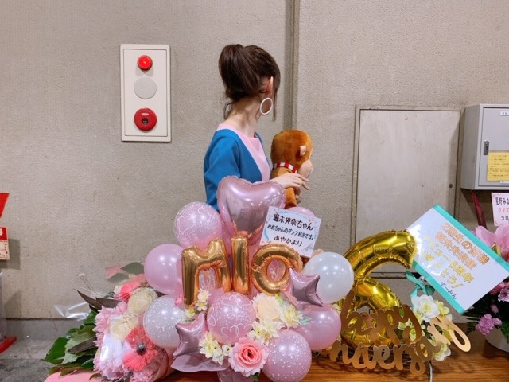

2019/0831Sat晴れましたね
やほ~
楽屋でもずーっとずーっと話してます☺︎
2期生仲良すぎる❤︎❤︎


昨日は本番前に純奈の香水をつけたんだ☺︎
今日も楽しみましょうね~
タオル、サイリウム、うちわすっごく見えます❤︎
ありがとうございます、！


関係ない話をすると、今日お猿さんがたくさん
夢に出てきました！！
こんなに猿が出てきたの初めて！
楽屋でもよく猿トークはするんだけど夢にまで出てきてくれて、夢の中のわたしは夢だと思ってないから
本当に幸せでした☺︎
みんな小さくてウキウキ走り回ってたんだけど
毛がふかふかの丸々としたお猿さんが一匹いて大人しくて、私にね、ゆっくり抱きついてきたの！
もーーーーー、かわいすぎました
ふわっふわ☺︎
で、ずっとコアラみたいに私に抱きついてるから
私もぎゅってしてたんだけどそのまま
立ち上がろうとしたら意外と重くて。笑
一旦降りてね〜^ ^
って降ろしました。笑

癒されたなあ
今日もライブ頑張れるなあ
夏の思い出作りましょうね☺︎
ではは
2019/08/31 09:30


コメント(331)
初日おつかれさま！あと二日間頑張ってください！
れいかちゃんとステキな思い出を作ってくださいね！
今日も楽しんでね(≧∇≦)
たくさんお猿さんでてきて良かったね♪
癒されて良かったね(*^^*)
今日もライブ頑張ってね！
夏の思い出いっぱい作ってね♪
またね♪
未央奈ちゃん神推し
秀喜より！(≧▽≦)
今日は晴れて良かったです☀️
ライブ頑張ってくださいね
昨日は参戦できなかったけど、今日は行けるから嬉しい(* >ω<)
未央奈ちゃんに見つけて貰えるように頑張るよ(＞∀＜)
夢は、自分がとても印象が残ってることと、最近感じたことが合わさって出来てるらしいから、未央奈ちゃんは最近、何か重いものでも持ったのかな(´∀｀)笑
今日も盛り上がりましょうщ(゜▽゜щ)
バクステ側の一塁側で29段目だけど見つけてもらえるように頑張るね！！
楽しみにしてます❤️
昨日、神宮ライブ行きました！本当に楽しくて行って良かったです！
来年も当てて絶対に行きたいです！
今日も頑張ってください！
ありがとう！！
とってもいい夢ですね。ライブ頑張ってくださいね。
今日、神宮ライブ見に行きます！
堀ちゃんのタオル、ペンライトいっぱい、
いっぱい振るからねー
体調気をつけてねー
堀ちゃん、大好きだよー
明日ライブ行きます！
暑くなるようなので気を付けながら楽しんでいこーーーー！
未央奈を神宮で見たいところだけど、チケットがどうしても当たらなくて、1日も神宮に行けません。こんだけ乃木坂がすごくなったということなんだねー。
2期生の仲良いとこ好き！
未央奈は2期生好きだもんねー。
お猿さん夢に出てきてよかったね。
今日も頑張れ！
明日のライブビューイング観に行くでねー
では
ようちゃんマン
玲香との貴重な時間を噛み締めて存分に楽しんでください！！
LIVEは行けないけどライブビューイング行くからね！
多分みえなかったかもしれないけどほんとに楽しかったし最高でした！9月1日はライブビューイングで観るね！
ビューイング用のカメラにアピールしてほしいです！
未央奈ちゃん、きいちゃん、絢音ちゃん、みり愛ちゃん、純奈ちゃんの
５ショット！
純奈ちゃん御用達の香水をつけたそうで♡
どう？香水をつけた事で誰かを包み込んでみたくならなかった？
というコメントをしようと思った矢先に夢の中でお猿さんを包み込んだそうで♡
お猿さんが大好きな未央奈ちゃんにとって最高の夢心地ですね♡
ライブ２日目も元気良くいってらっしゃい！
まだまだ暑いけどライブ頑張ってください！
2期生ほんとに好き♡♡
神宮1日目お疲れ様！！
あと2日頑張ってね！！
私も未央奈と一緒に夏の思い出作りたかった
てかお猿さんの夢とか可愛すぎる！笑
未央奈の影響で私も猿好きになったんだよ！⸜❤︎⸝ ⊂((・x・))⊃♡
二期生の明るさと仲の良さ凄く好きです！みんなめちゃくちゃ可愛い
猿が好きなみおなちゃんに癒されています！私は、みおなちゃんが大好きだから、よく夢に出てきます！
今日もみおなちゃんが大好きです！
にきちゃん。
団結力半端ないもんね。
今日ライブ観に行くよ！
2期生最高！
頑張って！
２枚目のきいちゃんの顔いいねw
お猿さんにいっぱい会えて幸せだね
今日も晴れるといいね ライブいっぱい楽しんでね
神宮1日目お疲れ様です 今日は晴れそうですね 良いパフォーマンスで頑張って行きましょう
2期生の仲の良さが伝わって来ましたよ
猿の夢は不思議な感じですね どんな意味があるのでしょうか？ 良いお告げならラッキーですね
ツアーの最終日まで疲れを回復しながら頑張って下さい
ご自愛下さいね
ライブ受験生で行けないけど、頑張って！
良いお天気になって良かったね！
ごめんね、神宮は行けないんだけど最高に楽しんできてね！！
このブログ読んで昔モンキーパークのリスザルの島行ったの思い出した。
リスザルさん達に取り囲まれました(笑)
(武装したゴリラは出てこなかったよね？？)
大好き
１日目、天気まずまずでしたね。
きぃちゃんの 晴れるよっ が効いたか
な。横でカーラー巻いたみおなちゃんの
眼差しや変な動きのみりあちゃんが可愛
くて仕方ありませんでした。
まなつさんも言ってたけど、あの程度の
雨は乃木坂にとっては雨ではありませんね
文学的なみおなちゃんのブログもいいけど
こういう雑談的なのも気軽に読めていい。
昨日のライブを観て、夢のウキウキしてる
猿は４期生で、ふわふわの猿はかっきーで
しょうか。
かっきーのＭＣで、みおなちゃんの優しい
エピソード紹介してたから、それが印象に
残ったかな。
大好きなもの同士が結びついたってところ
だね。
今日もライブ、行くぞぉー
2日目は参加します！楽しみー。ウキウキ！ウキキ⁈
何！？その夢！
めっちゃかわいいじゃん
でも、何か未央奈っぽいww
ライブ頑張ってね！
これからも応援してます！！
昨日神宮見に行ったよ！！最初の映像からずっと感動しまくりでした！花火もきれいで、すごく楽しい思い出になりました！
一塁側の女性エリアから見てます
似合ってます
お猿さんと言えば、まいやんに色々弄られた未央奈猿ですね笑
今日は私の地元もよく晴れております！久しぶりに暑いです！
体調は大丈夫でしょうか？万全にして残り2日間も頑張って！
夢にお猿さん出てきたんだね！自分もお猿さんになって出ていきたいなぁ～笑
本日も天気良さそうですね✨待ちに待った神宮ライブ……チケット当選の幸運に感謝です。行くことの出来ない未央奈推しの方々の分まで精一杯応援して、貴い時間を一緒に盛り上がりたいと思います!! ワクワク✨
では本日も怪我がないよう気をつけて、一緒に楽しみましょう✨✨
ブログ更新きてくれてありがとう！！
レッスン着イケてる~☺︎
ライブに行けないのは残念だけど応援してるね！
関係ないけど最近のみおなちゃんの前髪めっちゃ好きです！
神宮一日目ご苦労様。
昨日初森ベマーズ見ました。(笑)
嫉妬の権利のビジュアルで不良役で出てきたのでウケました。
ノギビンゴ10見ました。
「少しずつの猿」というソロ曲で猿の着ぐるみで登場するシーンを妄想しました。
今日もライブ頑張って。
明日は映画館に行きます。
ブログ更新ありがとう～
今日神宮行くよ
めっちゃ遠い席だけど、ほりっぴ～タオルを持ってめっちゃ盛り上がるからね
楽しみすぎる～
実は昨日の夢見がよくなかったんだ
あまり詳しくは覚えていないんだけどすごく不安な気持ちになって起きたよ
ライブで盛り上がって忘れよう
天気は、今の所大丈夫ですね。
昨日の天気の子祈りが効いたかな？
午後降りそうですが、夕方からは大丈夫でしょう。
2期生の絆、楽しそうですね。
見るだけでも癒されますよ。
可愛いです。
お猿さんの夢、幸せ満開の気持ちを聞けて自分も幸せです。
未央奈さんの幸せは、自分の幸せ。
今日の神宮、ほぼ真横で遠い位置てすが、気持ちで行きます！
大切な共有できる瞬間、楽しみましょう。
夏の思い出強くきざみたいです。
頑張って行きましょう！
ブログ更新ありがとー。
昨日のズッキュン可愛かった〜！！
明日はライブビューイングだけど、また個握で会おう！！
コメントする